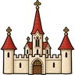
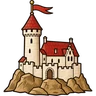

Den po volbě Jiřího z Poděbrad na Staroměstské radnici. Ladislav Pohrobek je od listopadu 1457 mrtev a nový král ještě není korunován. Čechy a Morava jsou nábožensky rozdělené, vedlejší země Koruny, Slezsko a obě Lužice, jsou převážně katolické a „kacířského“ krále přijímají neochotně nebo vůbec. Za hranicemi čekají sousedé, z nichž dva si na trůn sami dělají nárok.

město (okraj dle vyznání)
sídlo rodu (soused s tmavým lemem)Legenda mapy
Mapu lze přibližovat kolečkem myši nebo dvěma prsty a posouvat tažením myší či dvěma prsty.
Kroužky u sídel ukazují vazby vybraného rodu: ◌ krev ○ spojenci ○ spor.
Vyberte dvě sídla na mapě nebo v nabídce.
Panství rodůSchematické rozložení panství kolem rodových sídel. Bílá místa patří králi, církvi, rytířstvu a drobné šlechtě; šrafované plochy jsou městské državy. Kliknutím na panství vyberete rod.
Hranice jsou schematické.
Panské rody, církevní vrchnosti, údělná knížectví a města, která mají v Koruně politickou váhu. Řazeno podle zemí.
Vládnoucí rody okolních zemí a pohraniční rody, jejichž državy nebo léna zasahují do zemí Koruny.
Krev a sňatky, spojenectví a otevřené křivdy, jak stojí na počátku března 1458.
Rody jsou rozmístěné přibližně podle polohy svých sídel. Vazby vybraného rodu: krev, spojenectví a spory.
Uvnitř Koruny
Se sousedy a mezi sousedy
Muži a ženy, kteří v Koruně a za jejími hranicemi rozhodují o běhu věcí.
Bestiář dračích plemen Evropy a přilehlých zemí, sepsaný po Roztržení Opony.
Listy bestiáře teprve čekají na iluminátora.
Články o světě po protržení Závoje: o zemích, řádech, pověstech a tajemstvích.
Články kroniky budou doplněny.
Letopis
- září 1448
- Jiří z Poděbrad dobývá Prahu; Menhart z Hradce padne do zajetí.
- 1449
- Menhart umírá krátce po propuštění (3. 2.). Katolíci kolem Oldřicha z Rožmberka zakládají Strakonickou jednotu.
- 1451
- Eneáš Silvius Piccolomini navštíví Tábor a píše o Češích.
- 1452
- Jiří zemským správcem; Tábor kapituluje.
- 1453
- Korunovace Ladislava Pohrobka (28. 10.). Poprava Jana Smiřického ze Smiřic.
- 1454
- Polsko začíná válku s Řádem německých rytířů; čeští žoldnéři slouží na obou stranách.
- 1456
- Jošt II. z Rožmberka biskupem vratislavským. Piccolomini kardinálem.
- 1457
- Osvětimsko prodáno Polské koruně. Na litickém panství Jiřího vzniká Jednota bratrská. 23. 11. umírá Ladislav Pohrobek; Habsburkové se přou o rakouské dědictví.
- 1458
- 24. 1. Matyáš Korvín, Jiřího rukojmí v Praze, zvolen uherským králem; propuštěn za slib sňatku s Kateřinou z Poděbrad. 2. 3. volba Jiřího českým králem.